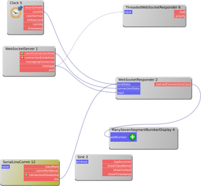

Bereits vor einigen Jahren wurde für dWb+ die Einführung von Mandantenfähigkeit diskutiert. Die aus der Schublade geholte Implementierung wurde nach erfolgreichen Lasttests für die Entwicklung von Servern verschiedenster Art eingesetzt.
 Nachdem ich
hier
bereits einmal ein verwackeltes Amateurvideo präsentierte, folgt hier nun ein weiteres:
Zu sehen ist das Ergebnis einer Interaktion mit einem
analogen Joystick in
dWb+:
Die Daten des Joysticks werden an alle mit dem dort konfigurierten WebSocket Server
verbundenen Clients gesendet - im vorliegenden Fall zwei Browser (Chromium und Firefox).
Beide zeigen eine HTML-Seite an, in der ein Canvas eingebettet ist, der einen Kreis darstellt.
Die Daten, die aus
dWb+
über den WebSocket empfangen werden, werden als Geschwindigkeiten in x- und y-Richtung interpretiert
und damit bewegt sich der Kreis im Canvas-Element.
Nachdem ich
hier
bereits einmal ein verwackeltes Amateurvideo präsentierte, folgt hier nun ein weiteres:
Zu sehen ist das Ergebnis einer Interaktion mit einem
analogen Joystick in
dWb+:
Die Daten des Joysticks werden an alle mit dem dort konfigurierten WebSocket Server
verbundenen Clients gesendet - im vorliegenden Fall zwei Browser (Chromium und Firefox).
Beide zeigen eine HTML-Seite an, in der ein Canvas eingebettet ist, der einen Kreis darstellt.
Die Daten, die aus
dWb+
über den WebSocket empfangen werden, werden als Geschwindigkeiten in x- und y-Richtung interpretiert
und damit bewegt sich der Kreis im Canvas-Element.

Workspace zum Einlesen der Informationen vom Analog.Joystick und zur Weitergabe an alle am WebSocket-Server angeschlossenen Clients.Tags


Neueste Artikel
-
 Aus FontChooser gelernt
Aus FontChooser gelernt
Java selbst bietet keine Gui-Komponente zur Auswahl einer Schriftart an. Daher hatte ich vor einigen Jahren - wie so viele andere auch - eine eigene Komponente dafür erstellt. Ich wollte sie etwas aktualisieren und aufpeppen und lernte dabei eine interessante Lektion...
Weiterlesen... -
Links zu InfluxDB, Grafana
Nach meinen ersten Versuchen mit InfluxDB und grafana habe ich mir hier mal eine Liste mit (für mich beim Einstieg) hilfreichen Links abgelegt
Weiterlesen... -
Oled Status Display für Time-Server
Nachdem meine Adapterschaltung für den älteren GPS-Empfänger E406A auf einer professionell gefertigten Leiterplatte bestückt war und funktionierte, fand ich hinten in meiner Bastelkiste ein I2C-Oled-Display.
Weiterlesen...
Manche nennen es Blog, manche Web-Seite - ich schreibe hier hin und wieder über meine Erlebnisse, Rückschläge und Erleuchtungen bei meinen Hobbies.
Wer daran teilhaben und eventuell sogar davon profitieren möchte, muß damit leben, daß ich hin und wieder kleine Ausflüge in Bereiche mache, die nichts mit IT, Administration oder Softwareentwicklung zu tun haben.
Ich wünsche allen Lesern viel Spaß und hin und wieder einen kleinen AHA!-Effekt...
PS: Meine öffentlichen GitHub-Repositories findet man hier.